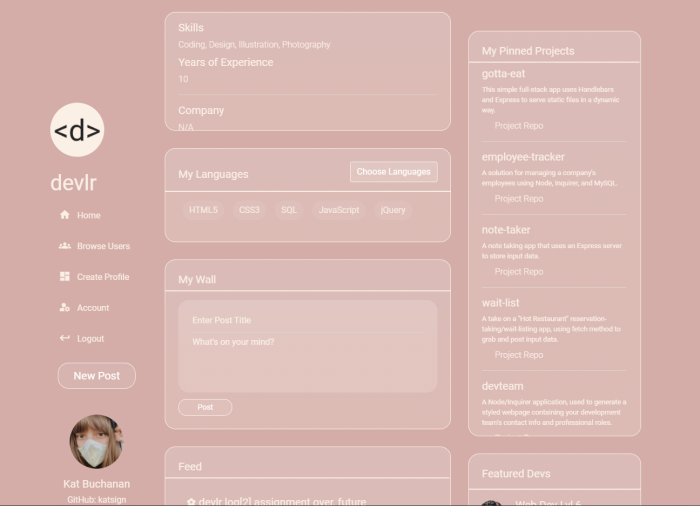
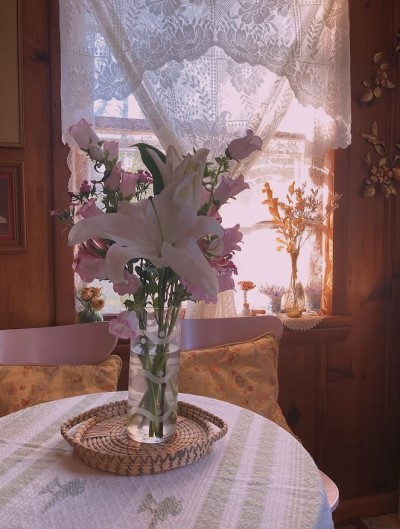
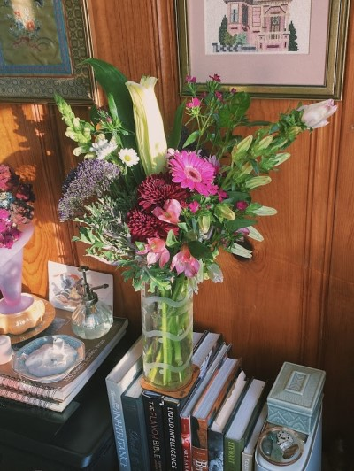
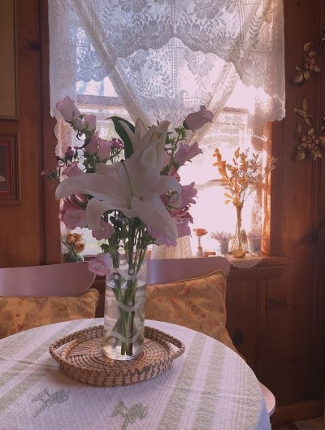
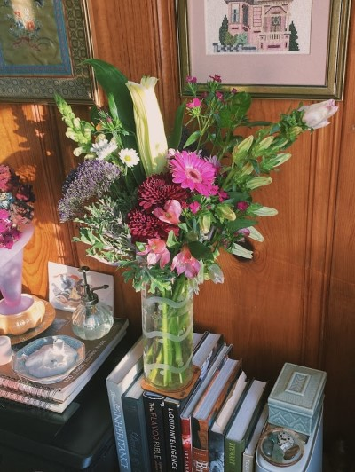

You found me. I'm so glad.

Meet | Kat Ruth Buchanan
Thanks for checking out my first web dev portfolio — I think I'm starting to get the
hang of things.
Grinding in my full-stack bootcamp, Chrome tabs and VSCode editor until I can
consider myself worthy of A Role As A Junior Developer, as I might tweet it. Really just a curious young
millennial who fondly recalls the old web and fiendishly longs for the new. So let's build it.
tab Featured Projects

devlr Developer Network
Create a customized profile to display your development background, pinned projects and status updates to share with other developers worldwide.
View Repo on GitHub

 


